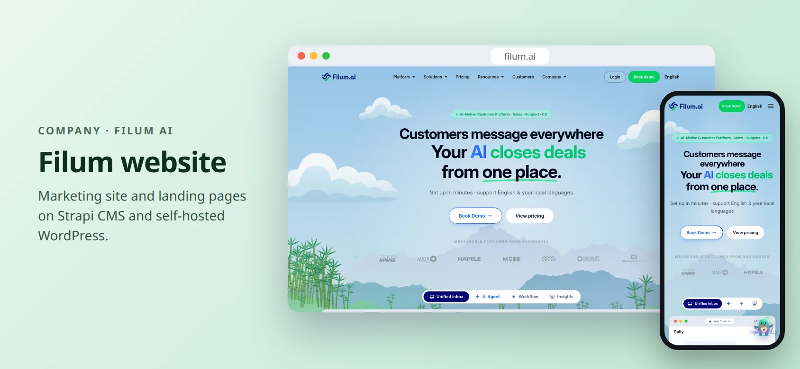

DỰ ÁN CÔNG TY · FILUM AI · 2024 — 2026
Website Filum
Website marketing và landing page của Filum AI, làm để đội marketing tự đăng nội dung nhanh.
- Next.js
- Strapi CMS
- WordPress (self-hosted)
- Docker
- GCP
- AWS

Giới thiệu
Website công khai là nơi khách hàng gặp sản phẩm lần đầu. Đội marketing cần ra trang và nội dung mới thường xuyên mà không phải chờ kỹ sư.
Mình làm các landing page trên Strapi CMS và cấu hình WordPress tự host trên production, giúp đưa nội dung lên nhanh hơn và dễ mở rộng hơn.
Có gì
Landing page
Các landing page marketing, đội marketing tự sửa qua Strapi CMS.
WordPress tự host
Cấu hình và vận hành WordPress trên production cho phần nội dung hợp với nó.
Tốc độ
Nội dung lên nhanh hơn, dễ mở rộng khi lượng truy cập và số trang tăng.
Kỹ thuật
- FrontendTrang Next.js lấy dữ liệu từ Strapi CMS.
- Hạ tầngDịch vụ tự host bằng Docker trên cloud (GCP, AWS).
Xem bản đang chạy
Mở trang đang chạy trong tab mới.